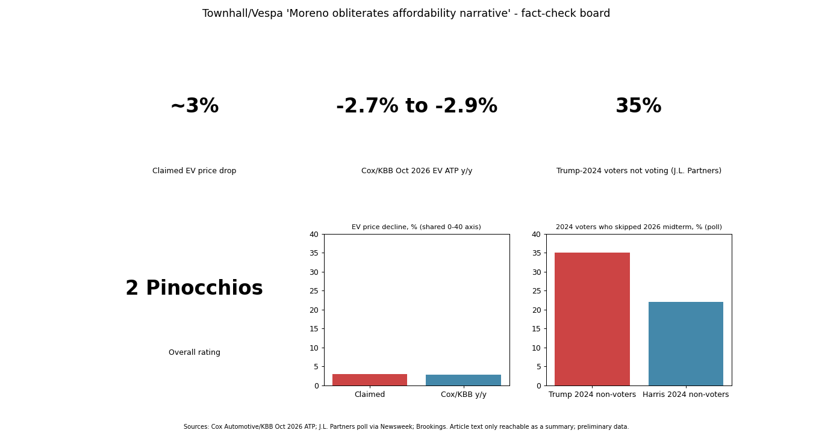

Moreno's EV claim is roughly true on the number, misleading on cause: 2 Pinocchios

Summary of findings
The piece (opinion commentary) rates 2 Pinocchios. The figures check out: Cox/KBB put the October 2026 average new-EV price at about $56,220, down 2.7-2.9% year over year, matching Moreno's "about 3 percent" drop after the $7,500 credit ended Sept 30. The causal inference ("subsidies raise costs") is not shown by that figure.
- Misleading: the price drop coincides with a mix shift (cheaper EV sales collapsed, luxury share rose) and EV incentives at 11.3% of price vs 6.8% industry-wide. A one-month year-on-year change cannot isolate the credit.
- 35% of 2024 Trump voters stayed home: from one J.L. Partners poll (22% for Harris voters); Rattner's voter-file estimate is about 25 million. Preliminary, and Brookings notes final turnout is not out.
- Gas prices and refinery closures: Senate Energy Committee fact sheet cites $4.52 national average (partisan source, war with Iran); Valero Benicia and Phillips 66 LA closures reported. Refinery closures as a driver is contested.
- Not checkable here: the exact Ingraham quote and the Steve Guest post; Townhall's full text was only available as a summary, and no transcript was found.
Sources
- coxautoinc.com/insights/ev-market-monitor-october-2026/ and oct-2026-atp-report
- newsweek.com (J.L. Partners poll), brookings.edu/articles/how-democrats-won-big-and-why-2028-remains-an-open-question
- energy.senate.gov 2026/5 Heinrich fact sheet
- Townhall article (summary only)
Confidence: medium; secondary search summaries, no primary table opened.